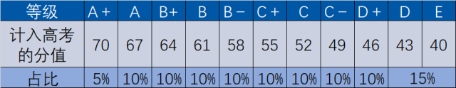

何谓“3+3”
“3+3”科目
小三门是指从政治、历史、地理、物理、生物、化学六门中选出三门作为高考的选考科目。
考试安排
生物、地理高一时需参加两门的合格考，高二时若有选生物、地理作为高考小三门的同学需在高二下学期参加等级考。所有同学需参加物理、化学、历史、政治的合格考。高三下学期根据各自的选科进行剩余小三门的等级考。
分数构成
通过合格考便能够获得40分的基准分，之后通过等级考，划定成绩的比例分布，给定相应的分数。最高A+档可得30分，最低E档可获得0分，以此构成小三门满分210分。
合格考
合格考主要考察同学们在这6门课程的基础，防止因为只学习语数英而导致的严重偏科。合格考的难度较低，且不合格的判定标准为全市的后5%，大多是同学通过是没有问题的。但是如果不幸没有通过，那么是不具备参加对应科目的等级考与获得高中毕业证书的资格。
等级考
等级考是高考走入“3+3”模式后带来的最大不同，原先的“3+1”模式分文理科，而现在你可以自由组合，更好地去选择自己擅长的科目。但是“3+3”模式带来了考试时间的不同以及等第换算分等一系列的问题，这也就导致了复习准备时间变短，同时你考试的分数不能直接决定你获得的成绩，而是由你成绩在所有考生中的百分比站位决定，这也是“3+3”模式中让考生压力颇大的地方。
等级考档次对应分数表

 上海高考政策解读
上海高考政策解读